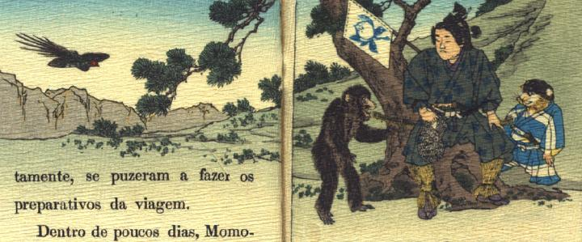

桃太郎のもとに犬、猿、雉が集まってきている。犬は既に従うことを約束したらしく、桃太郎の脇に控えて、青い着物を着、腰に刀を差している。猿は何も身に着けずに後ろ脚で立って、桃太郎に何か話しかけている。雉は空を飛んで、桃太郎の方に向かっている。
著作者：J.E.de Campos／出典：親書誌：U426_nichibunken_0115：Momotaro／日付：2006／資源識別子：U426_nichibunken_0115_0002_0000
Copyright (c)2010- International Research Center for Japanese Studies, Kyoto, Japan. All rights reserved.